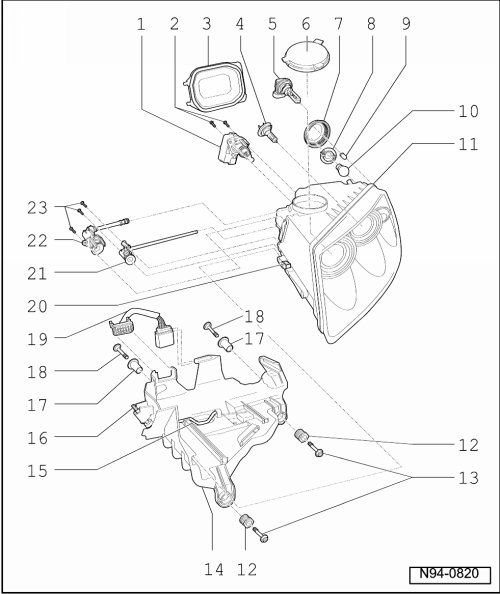

Halogen Headlamps Assembly Overview, through 11.06
Halogen Headlamps Assembly Overview, through 11.06
• After performing work which affects headlamp adjustment, check headlamp adjustment and adjust headlamps if necessary. .

- Tightening specifications --> [ Front Lamps ] [1][2]Headlamp
1 - Left Headlamp Beam Adjusting Motor (V48) and Right Headlamp Beam Adjusting Motor (V49)
• Removing and installing --> [ Halogen Headlamp Range Control Positioning Motor, through 11.06 ] Halogen Headlamp Range Control Positioning Motor, through 11.06
2 - Screws
• for Left Headlamp Beam Adjusting Motor (V48) and Right Headlamp Beam Adjusting Motor (V49)
3 - Cap
4 - Left Low Beam Headlamp (M29) and Right Low Beam Headlamp (M31)
• Lamp H7LL 12V, 55 W
• Replacing --> [ Low Beam Bulb ] Halogen Headlamp Bulbs, through 11.06
• Checking --> [ Vehicle Electrical System Output Diagnostic Test Mode ] Initial Inspection and Diagnostic Overview
5 - Left High Beam Headlamp (M30) and Right High Beam Headlamp (M32)
• Lamp H9 12V, 65 W
• Replacing --> [ High Beam Bulb ] Halogen Headlamp Bulbs, through 11.06
• Checking --> [ Vehicle Electrical System Output Diagnostic Test Mode ] Initial Inspection and Diagnostic Overview
6 - Cap
7 - Cap
8 - Lamp socket with grip piece
• for Left Front Turn Signal Lamp (M5) and Right Front Turn Signal Lamp (M7)
9 - Left Parking Lamp (M1) and Right Parking Lamp (M3)
• Lamp 12V, W 5 W LL (for RoW models)
• Lamp 12V, WY 5 W (for North American models, colored orange)
• Replacing --> [ Parking Lamp Bulb ] Halogen Headlamp Bulbs, through 11.06
• Checking --> [ Vehicle Electrical System Output Diagnostic Test Mode ] Initial Inspection and Diagnostic Overview
10 - Left Front Turn Signal Lamp (M5) and Right Front Turn Signal Lamp (M7)
• Lamp 12V, PY 21 W Diadem
• Replacing --> [ Front Turn Signal Bulb ] Halogen Headlamp Bulbs, through 11.06
• Checking --> [ Vehicle Electrical System Output Diagnostic Test Mode ] Initial Inspection and Diagnostic Overview
11 - Headlamp
• Removing and installing --> [ Headlamps, through 11.06 ] Headlamps, through 11.06
• Correcting installation position of headlamp --> [ Headlamps Correcting Installation Position ] Procedures
• Perform basic setting of headlamps.
12 - Adjustment bushing
• Correcting installation position of headlamp --> [ Headlamps Correcting Installation Position ] Procedures
13 - Screws
• For front headlamp mount
14 - Headlamp mount
• Headlamp Mount, 6-Cylinder Gasoline, Removing and Installing --> [ Headlamp Mount, through 11.06 ] Headlamp Mount, through 11.06
• Headlamp Mount, 10-Cylinder TDI and 8-Cylinder Gasoline, Removing and Installing --> [ Headlamp Mount, through 11.06 ] Headlamp Mount, through 11.06
15 - Securing clip
16 - Locking bolt
17 - Bushing
18 - Screws
• For rear headlamp mount
19 - Connector
20 - Securing clip
21 - Adjusting shaft for high beam lateral adjustment
22 - Adjusting shaft for dip and high beam height adjustment
23 - Screws
• For adjusting shafts